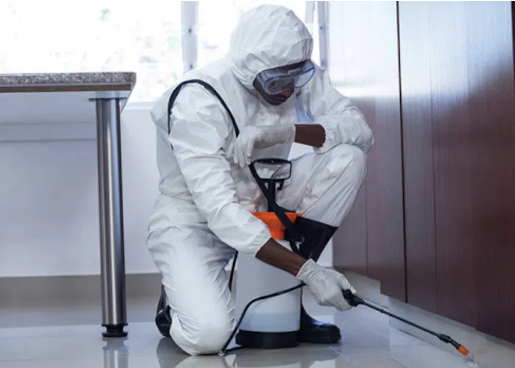

SawaraEntreprise
77 552 64 19
Devis WhatsApp
WhatsApp
Virus, bactéries, champignons — un local non désinfecté est un risque invisible pour la santé de vos collaborateurs et de vos clients. Sawara Entreprise intervient à Dakar avec des produits biocides homologués et un protocole rigoureux. Devis gratuit sur WhatsApp.

Un local peut sembler parfaitement propre et rester contaminé par des agents pathogènes invisibles. Le nettoyage et la désinfection sont deux opérations distinctes qui répondent à des objectifs différents.
Sawara Entreprise n'utilise pas des produits ménagers courants. Nos désinfectants sont des biocides professionnels homologués, sélectionnés selon le type de local et les agents pathogènes ciblés. Les fiches de données de sécurité sont disponibles sur demande.
Nos produits détruisent les bactéries responsables d'infections courantes — salmonelles, staphylocoques, E. coli. Indispensable pour les cuisines et surfaces alimentaires.
Formulations actives contre les virus enveloppés et non enveloppés. Protocole renforcé pour les locaux ayant accueilli des personnes malades.
Élimination des champignons et moisissures, particulièrement présents après l'hivernage dakarois dans les pièces mal ventilées.
Nos produits sont sans danger pour les occupants une fois le temps de contact respecté et le local ventilé. Délai précisé systématiquement par le technicien.
Sawara Entreprise peut fournir un document d'intervention précisant les produits utilisés, les zones traitées et la date. Utile pour les établissements soumis à des contrôles sanitaires : restaurants, écoles, cabinets médicaux.
La désinfection ne concerne pas uniquement les hôpitaux. Chaque local à forte fréquentation ou à risque sanitaire en a besoin régulièrement.
Espaces de travail partagés, salles de réunion, sanitaires. Mensuel recommandé.
Hygiène alimentaire obligatoire. Surfaces de préparation, hottes, sols, sanitaires clients.
Salles de classe, réfectoires, sanitaires. Enfants particulièrement vulnérables aux infections.
Protocole renforcé pour les espaces de soins. Produits adaptés aux surfaces sensibles.
Après grippe, gastro ou maladie contagieuse. Désinfection complète du logement avant retour à la normale.
Baptêmes, mariages, événements. Désinfection avant et après pour accueillir vos invités en toute sécurité.
Chaque intervention suit un protocole précis pour garantir une désinfection complète et efficace. Le technicien arrive en tenue de protection adaptée avec l'équipement nécessaire.
Identification des zones à risque, du type de local et des agents pathogènes ciblés. Sélection du biocide adapté.
Retrait ou protection des éléments sensibles. Évacuation des occupants si nécessaire selon le produit utilisé.
Pulvérisation sur toutes les surfaces ciblées — sols, murs, meubles, équipements, sanitaires. Zones à forte contamination traitées en priorité.
Le produit doit agir le temps nécessaire pour détruire les agents pathogènes. Ce délai varie selon le biocide et le niveau de contamination.
Ventilation du local, indication du délai avant réoccupation. Remise du document d'intervention sur demande.
Sawara Entreprise a déjà assuré des interventions pour des ambassades, des ONG internationales et de grandes entreprises comme Eiffage. Lettres de recommandation disponibles sur demande.
Sawara Entreprise intervient dans toute la région dakaroise et au-delà selon les besoins.